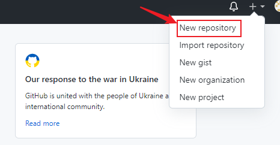
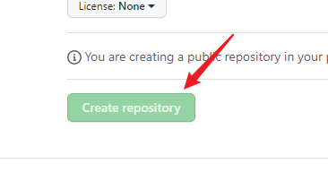
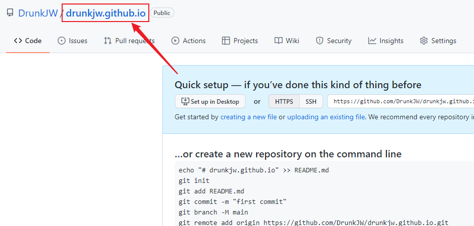
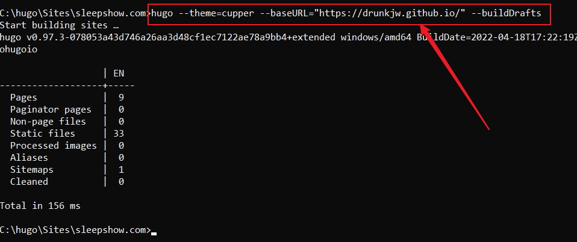
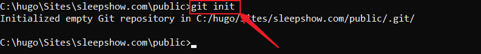
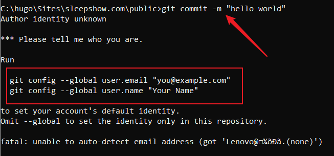
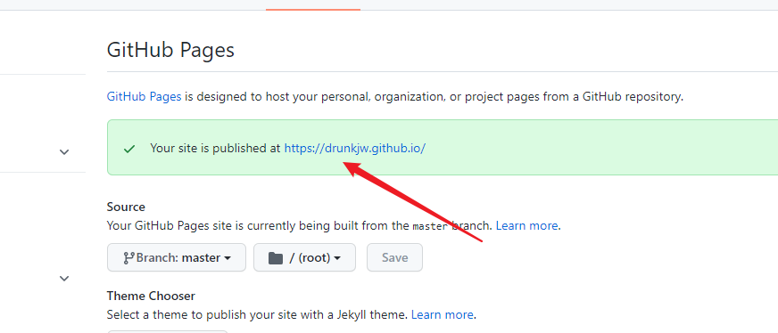

使用系统：windows10系统
1.下载git
官网上有教程，跟着安装就行了。
注意：一定要检查git是否在环境变量path中，如果不在就添加进去!
2.下载hugo
1.选择一个存放地址，创建一个bin文件存放 hugo；
2.创建一个site文件存放博客站点，将hugo.exe所在的文件地址添加到path环境用户变量中；
3.检测是否安装成功：
- 在命令提示符（建议以管理员身份运行）中，输入hugo help；
- 出现信息，表示安装成功；
3.创建本地网站
1.创建新站点
- 在命令提示符内进入到 site 文件夹下(命令符：cd)；
- 输入：hugo new site webname.com；
- 最后会显示网站的本地访问地址；
2.选择一个博客主题
- 进入到 hugo官方网站，选择合适的主题；
- 根据提示进行安装(使用git命令)
- 打开git bash软件；
- 进入到网站根目录下；
- 根据主题描述输入安装命令；
- 将下载主题文件夹下 exampleSite 中的config.yml的文件复制到网站根目录下（有时候后缀不一定是.yml）；
3.创建博客文件
- 在根目录下输入：hugo new posts/blog.md，会提示创建成功；
- 可以用 markdown 或者 Visual Studio Code 软件编写内容；注意写的时候将draft变成false；
- 然后进行预览，输入：hugo server -t 主题名 --buildDrafts；
- 根据提示给的网站地址预览；

- 这是实时刷新的，方便在写博客的时候随时查看效果；
- 按ctrl+c结束；
4.在github上创建仓库
1.
2.
- 填写的名字一定要与前面的名字一致，且是小写（图中是之前建过一次了）；
3.
5.将本地网站部署到 github 上
1.点击刚才建立的仓库；
2.
3.下图中 –baseURL="(地址)" –theme=(主题名)；
- 
4.生成一个 public 文件；
- 
6.将 public 文件传到 github 仓库上，使别人能够远程进行访问
1.进入到 public 文件下；
2.
3.
- 若出现异常，将长框里的命令复制输入，回车；
- 再次输入：git add .；
4.输入：git commit -m "(文字自定)"；
- 
- 如出现框中的报错，输入框中的命令，" " 是你自己的信息，第一个是邮件名，第二个是下图文件名：
- 
- 再次输入：git commit -m "(文字自定)"；
5.出现下列信息表示成功
- 
7.进行关联
1.输入：git remote add origin 链接；
2.这里的链接是：
- 
- 注意大小写，不要忘记链接后面的 git ，如果输错了就删除远程git仓库；
3.git remote rm origin（删除远程仓库），再进行关联；
4.输入：git push -u origin master；
- 
- 注意浏览器，它会弹出一个消息，点击绿色的选项进行即可；
5.刷新git仓库，出现内容代表成功；
- 
8.查看是否可以远程访问，网站名就是仓库名；
1.如果出现404，进入仓库；
- 
- 
2.如果上图框中是红色的叉：
- 
- 
- 点击红叉旁边的刷新按钮（图中是已经刷新过了的），等待；
- 出现下列信息表示成功：
- 